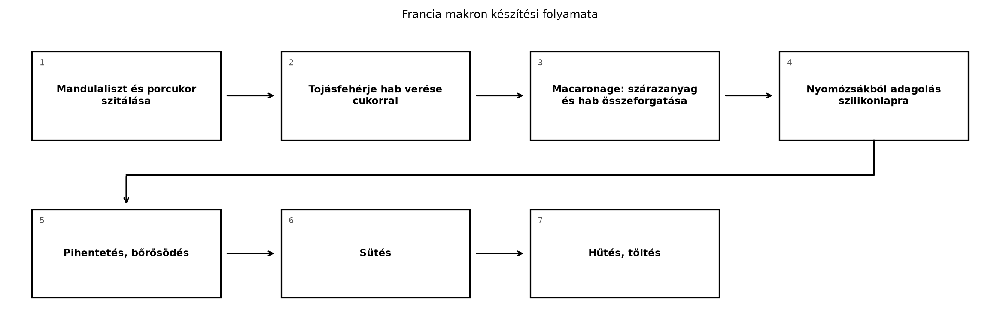

A cukrászműhelyben gyakran találkozol azzal a helyzettel, hogy a vendég kérésére mandulás, ropogós vagy éppen lágyan szeletelhető édes terméket kell készítened. A sütőmarcipán, a makron és a nugát három olyan félkész termék, amely elsőre hasonlít egymásra, mert mindegyikben meghatározó a mandula vagy más olajos mag. Mégis más a technológiájuk, az állaguk és a felhasználásuk. Ha nem érted a különbséget, a makronod lapos lesz, a sütőmarcipán figurád kifolyik a sütőben, a nugátod pedig szétesik szeleteléskor. Ebben a leckében lépésről lépésre felépítjük mindhárom terméket.
A következő folyamatábra a francia makron készítésének alaplépéseit mutatja. A részleteket a gyakorlati útmutatóban dolgozzuk ki.

Definíció. A sütőmarcipán olyan, mandulából (vagy más olajos magból) és cukorból készült, tojásfehérjével vagy anélkül gyúrt, formázható massza, amelyet sütésre szánunk. A sütőmarcipán a sütés hatására megtartja formáját, kissé megemelkedik, felülete aranyszínűre sül, belseje puha marad. Az étkezési marcipántól (lásd a Étkezési marcipánok alfejezetet) abban különbözik, hogy kevesebb cukrot vagy több tojásfehérjét tartalmazhat, és kifejezetten hőkezelésre tervezték. Az étkezési marcipán nyersen is fogyasztható, a sütőmarcipán nyersen tömör, fanyar és nem jellemző.
Definíció. A makron (francia macaron) két, mandulalisztből, porcukorból és tojásfehérjéből készült, sütőben megsült, ropogós héjú, belül puha korong, amelyet krémmel, ganache-zsal vagy lekvárral töltünk. A makron nem azonos a kókuszos csók vagy a habcsók fogalmával, mert a tésztája mandulalisztet és porcukrot is tartalmaz, és sütés közben jellegzetes „lábat” (pied) fejleszt. Az olasz és a francia technikát a későbbiekben hasonlítjuk össze.
Definíció. A nugát (nougat) olyan édesipari félkész termék, amelyben főzött cukor, méz vagy glükóz, felvert tojásfehérjehab és pirított olajos mag (leggyakrabban mandula, mogyoró, pisztácia) alkot együtt rugalmas vagy roppanó, szeletelhető masszát. A hideg nugát alacsonyabb hőmérsékleten, grillázs vagy praliné és csokoládé keverékéből készül; a meleg nugát forró cukorsziruppal hőkezelt tojásfehérjehabbal és pirított magvakkal készül.
Szabály. A három termékcsoport közös pontja az olajos mag, ezért minden technológiai lépésben figyelni kell az allergén keresztszennyeződésre (mandula, mogyoró, pisztácia, dió). A mandulát, mogyorót és más olajos magot külön tárolóedényben, külön kanállal és külön darálóban kell kezelni, ha az üzemben allergénmentes terméket is készítenek.
A sütőmarcipán alapanyaga a hámozott, szárított, finomra darált mandula. A mandula mellett porcukor, tojásfehérje, esetenként glükózszirup vagy invertcukor szerepel a receptben. A glükózszirup nedvességet köt meg, lassítja a kiszáradást, és segíti a massza barnulását. A tojásfehérje a sütés közben megalvasztja a fehérjét, ezáltal a massza megtartja a formáját, és a felülete fényes lesz.
A hideg eljárás során a mandulalisztet és a porcukrot összekeverjük, majd tojásfehérjét és glükózt adunk hozzá. Az anyagot addig gyúrjuk, amíg egynemű, formázható masszát kapunk. Fontos, hogy a tojásfehérjét csak annyira dolgozzuk bele, hogy a massza ne ragadjon, de ne legyen túl lágy. Az így kapott masszát azonnal formázzuk, vagy hűtve pihentetjük. A hideg eljárás előnye, hogy gyors és egyszerű, de a massza érzékenyebb a túlgyúrásra, és sütés közben hajlamosabb a megfolyásra, ha túl sok tojásfehérjét kapott.
A meleg eljárás lényege, hogy a cukrot kevés vízzel, glükózzal sziruppá főzzük, majd a forró szirupot a mandulaliszthez és a tojásfehérjéhez keverjük, vagy a tojásfehérjét a forró sziruppal habosítjuk, és ezt keverjük a mandulához. A hő hatására a mandulalisztben lévő fehérje és a tojásfehérje részben denaturálódik, a massza sűrűbbé, stabilabbá válik. A meleg eljárással készült sütőmarcipán sütés közben kevésbé folyik szét, jobban tartja a formáját, és a felülete egyenletesebben pirul. Hátránya, hogy forró sziruppal dolgozunk, ezért égésveszély van.
Figyelem. A meleg eljárásnál a forró cukorszirup hőmérséklete 110–121 °C között mozoghat, azaz súlyos égési sérülést okozhat. A szirupot mindig a keverőtál falához öntve, alacsony fordulaton adagoljuk, és soha ne hajoljunk a gőz fölé. Használjunk hosszú nyelű eszközt és hőálló kesztyűt.
Recept. Az alábbi mennyiség körülbelül 1 kg sütőmarcipánt ad. Az arányok tájékoztató jellegűek, a pontos receptúra a felhasznált mandulaliszt szemcseméretétől és a kívánt formázhatóságtól függ.
| Nyersanyag | Mennyiség (g) | Megjegyzés |
|---|---|---|
| Hámozott mandulaliszt | 500 | finomra őrölt, szitált |
| Porcukor | 420 | átszitálva |
| Glükózszirup | 40 | DE 40–43 (ellenőrizendő: gyártói adatlap) |
| Tojásfehérje | 40 | pasztőrözött tojásfehérje porból vagy folyadékból |
| Víz | 30 | a sziruphoz |
| Összesen | 1030 | főzési párolgás kb. 15–30 g (ellenőrizendő mérlegeléssel) |
A gyakorlatban a szirup főzésekor a víz egy része elpárolog (kb. 15–30 g), így a kész massza kb. 1000–1015 g lesz; tanulási célra 1000 g-mal számolunk. A táblázat összesítő sora tehát főzési párolgást jelöl, nem sütési veszteséget.
A meleg eljárás lépései:
A hideg eljáráshoz ugyanezeket az alapanyagokat keverjük össze, de a cukrot nem főzzük fel, hanem mindent egyszerre, lehetőleg rövid ideig gyúrunk. A tojásfehérjét itt is pasztőrözött formában használjuk.
A makronok készítésének két fő iskolája van. A francia technika egyszerűbb: a tojásfehérjét a cukor egy részével kemény habbá verjük, majd a mandulaliszt és porcukor keverékét óvatosan beleforgatjuk. Az olasz technika során a tojásfehérjét két részre osztjuk. Az egyik felét a mandulaliszthez és porcukorhoz keverjük, a másik feléből habot verünk, és forró cukorszirupot adunk hozzá, így olasz habot (meringue italienne) készítünk. Ezt a stabil habot forgatjuk a mandulás részhez.
Az olasz technikában a hab fele a forró cukorsziruptól hőkezelt, de a mandulás részbe kevert fehérjefél nyers marad; a francia technikában a teljes fehérje csak a sütés során hőkezelődik. A biztonságot ezért mindkét technikánál a pasztőrözött tojásfehérje és a sütés adja, így a nyers massza kezelésekor különösen fontos a higiénia. Mindkét eljárásnál pasztőrözött tojásfehérje használata javasolt, különösen akkor, ha a készterméket nem azonnal sütjük.
A makrontészta készítésének kulcsművelete a macaronage, azaz a mandulás por és a hab összeforgatása. A cél, hogy a tészta fényes, lávaszerű, kissé folyós legyen: ha a spatuláról lecsorgatva a massza szalagja 10–15 másodperc alatt elsimul, akkor jó az állag. A túlkeverés folyóssá teszi a masszát, a makron szétterül; az alulkeverés miatt a massza csúcsos marad, és a makron teteje repedezett lesz.
A macaronage három állapotát (a spatuláról lecsorgó massza és a kinyomott korong felülnézetben), valamint a jó és a hibás makron metszetét az alábbi ábra mutatja.
A sütést megelőzően a kinyomott korongokat 20–60 percig pihentetjük, hogy a felületükön vékony, tapintásra száraz „bőr” alakuljon ki. Ez segíti a jellegzetes „láb” kialakulását. A sütő hőmérséklete általában 140–160 °C, a sütési idő 12–16 perc (ellenőrizendő: a sütő típusa és a korong átmérője szerint). A makron akkor jó, ha a lába kifejlődött, a teteje sima, fényes, a korong egyben leemelhető a sütőpapírról, és a belseje enyhén puha, nem folyós.
Hideg nugát készítéséhez először grillázst vagy pralinét készítünk. A grillázs pirított, durvára tört olajos mag és karamellizált cukor keveréke; a praliné ennek finomra őrölt, kenhető változata (lásd a Karamell és olvasztott cukorkészítmények: dobos cukor, grillázs, cukorfesték alfejezetet). A hideg nugát úgy készül, hogy a pralinéhoz olvasztott ét- vagy tejcsokoládét, esetleg kevés kakaóvajat keverünk, a masszát formába simítjuk vagy hengerré formázzuk, és hűtve dermesztjük. A hideg nugát lágy, kenhető, szeletelhető, és kiválóan alkalmas bonbontölteléknek vagy teasütemények betétjének. A csokoládé és a praliné aránya általában 1:1 körül van, de a kívánt keménységtől függően változtatható.
Meleg nugát készítésekor cukrot, glükózt és mézet főzünk fel körülbelül 140–150 °C-ra (ellenőrizendő: a kívánt állagtól függően). A tojásfehérjét közben félkemény habbá verjük. A forró cukorszirupot a habhoz öntjük, és addig verjük, amíg a hab fényes, sűrű és meleg marad. Ezután a pirított, még melegen tartott olajos magvakat (mandula, mogyoró, pisztácia) óvatosan beleforgatjuk. A masszát olajozott vagy ostyalappal bélelt formába öntjük, lepréseljük, és hűvös helyen dermesztjük. A meleg nugát rugalmas, vágható, hosszabb ideig eltartható, ha nedvességtől védve csomagoljuk.
Figyelem. A 140–150 °C-os mézes cukorszirup és a forró nugátmassza a bőrhöz tapad, mély égést okoz. Magas falú edényben főzz, a szirupot a forgó habverő és a tál fala közé, vékony sugárban öntsd; a préseléshez hőálló kesztyűt használj; a gép működése közben ne nyúlj a tálba. Égésnél azonnal hűtsd folyó hideg vízzel, a rátapadt cukrot ne tépd le.
A nugát készítésekor a magvakat mindig szárazon pirítsuk meg előtte, mert a nedvesség a masszát híggá teszi, és a szeleteléskor szétesik. A meleg nugátnál a tojásfehérjét a forró szirup hőkezeli, de a magvak hozzáadása előtt ellenőrizni kell, hogy a hab legalább 70–75 °C-os maradt-e (ellenőrizendő: hőmérővel, a biztonságos hőkezeléshez). A hideg nugátnál a praliné és a csokoládé keverése alatt a hőmérséklet ne haladja meg a 40 °C-ot, különben a csokoládé kiválik, és a massza fénytelen lesz.
A sütőmarcipán nyers masszája hűtve, légmentesen csomagolva 2–4 hétig tárolható (ellenőrizendő: gyártói adatlap és a felhasznált tojásfehérje típusa szerint). A kisütött sütőmarcipán termék száraz, hűvös helyen, jól záródó dobozban 1–2 hétig őrzi meg állagát.
A makron héjak töltés nélkül, légmentesen csomagolva, hűvös helyen 3–5 napig ropogósak maradnak, mélyhűtve több hétig is eltarthatók. A megtöltött makronokat hűtve tároljuk, és 2–4 napon belül felhasználjuk (ellenőrizendő: a töltelék típusa szerint). A nugátot száraz, hűvös helyen, légmentesen csomagolva tároljuk; a hideg nugát hűtést igényel, a meleg nugát szobahőmérsékleten is eltartható, ha jól becsomagolt.
A sütőmarcipán, a makron és a nugát receptúráinál gyakran kell kisebb vagy nagyobb adagot számolnunk. A következő két példa a szorzószám és a veszteség használatát gyakoroltatja.
Számítás. Az előző sütőmarcipán recept 1030 g tésztát ad, amelyből a meleg eljárás során elpárolog körülbelül 15–30 g víz, tehát a kész massza kb. 1000–1015 g; tanulási célra 1000 g-mal számolunk. Hány gramm mandulalisztet kell kimérnünk 600 g kész sütőmarcipánhoz?
Adott: a recept 1000 g kész masszához 500 g mandulalisztet ír. A kívánt mennyiség 600 g.
A szorzószám:
A mandulaliszt tömege:
Hasonlóan: porcukor 252 g, glükózszirup 24 g, tojásfehérje 24 g, víz 18 g. Az összes nyers tömeg 618 g, a kész tömeg 600 g. ∎
Számítás. 40 darab francia makronhoz (80 fél) a következő alaptésztát használjuk: mandulaliszt 100 g, porcukor 100 g, tojásfehérje 80 g, kristálycukor 80 g. Egy fél makron sütés előtt átlagosan 4,5 g tésztát igényel. Hány fél készíthető ebből az adagból, ha a macaronage és a nyomózsákban maradó veszteség 5%?
A tészta összes tömege:
A felhasználható tészta (5% veszteséggel):
A felek száma:
Tehát 76 fél, azaz 38 makron készíthető, ha minden fél azonos méretű. A gyakorlatban a 40 darabos célt úgy érjük el, hogy az adagot 5–8%-kal megnöveljük. ∎
Készíts francia makront, és közben sajátítsd el a sütőmarcipán és a hideg nugát alapműveleteit is. A gyakorlat során a makron technológiai lapját kell követned.
Mosd meg a kezed, viselj tiszta munkaruhát, hajhálót és kötényt. A munkafelületet fertőtlenítsd, a tálakat és eszközöket zsírtalanítsd, mert a tojásfehérje habverése zsírérzékeny. Ellenőrizd a mandulaliszt és a tojásfehérje fogyaszthatósági idejét.
A makron sütéséhez forró sütőt használsz. A sütőajtót óvatosan nyisd, a forró sütőlemezt edényfogó kesztyűvel fogd meg. A robotgépet csak oktatás után, felügyelet mellett használd; a habverőfej behelyezésekor a gép legyen kikapcsolva.
Technológiai lap.
| Nyersanyag | Mennyiség (g) | Megjegyzés |
|---|---|---|
| Mandulaliszt | 100 | finomra őrölt, szitált |
| Porcukor | 100 | átszitálva |
| Tojásfehérje | 80 | pasztőrözött, szobahőmérsékletű |
| Kristálycukor | 80 | finom szemcséjű |
| Összesen | 360 | egy fél kb. 4,5 g nyers tészta |
A sütőmarcipán sütés után aranyszínű, a felülete repedésmentes, a formája megtartott. A belseje puha, de nem nyers, a mandulaillat érezhető. A makron minőségi jellemzőit a technológiai lap tartalmazza. A nugát színének egyenletesnek kell lennie, a magvak egyenletesen oszlanak el, a massza szeleteléskor nem morzsálódik, nem nyúlós. A hideg nugát fényes, sima felületű, a meleg nugát rugalmas, de nem ragad a késhez.
Hiba. A sütőmarcipán figura sütés közben szétfolyik. Ok: túl sok tojásfehérje vagy glükóz a masszában; a hideg eljárásnál a masszát nem hűtötték, és a sütő hőmérséklete túl alacsony volt. Megelőzés: a receptúrát mérlegen pontosan kövessük, a masszát sütés előtt hűtsük, és a sütőt megfelelően előmelegítsük.
Hiba. A makron teteje repedezett, nincs lába. Ok: alulkevert tészta (túl kemény), nem megfelelő pihentetés, túl magas sütőhőmérséklet. Megelőzés: a macaronage-t addig folytassuk, amíg a massza lávaszerű nem lesz; a korongokat hagyjuk bőrösödni; a sütőt ellenőrzött hőmérsékleten tartsuk.
Hiba. A nugát szeletelés közben törik, a magvak kihullanak. Ok: a magvakat nem pirították meg, a masszát túl sokáig főzték, vagy a vágókést nem melegítették. Megelőzés: a magvakat szárazon pirítsuk, a cukrot ne főzzük túl magas hőfokra, és a nugátot meleg, olajozott pengéjű késsel szeleteljük.
Valós eset. Egy cukrászda esküvői süteménytáblához 120 darab francia makront vállalt. A cukrásztanuló a gyakorlatban megmérte a tésztát, de elfelejtette pihentetni a korongokat, mert sietett. A sütőből kivett makronok teteje felrepedt, alig volt lábuk, és a vendégek számára nem voltak esztétikusak. A tanuló a hibás tételt selejtezte, a megmaradt tésztából új adagot készített, és a pihentetést időzítővel ellenőrizte. A tanulság: a makron technológiájában a pihentetés és a macaronage nem elhagyható kényelmi lépés, hanem a termék szerkezetét meghatározó művelet.
1. feladat (A) Határozd meg, hogy mennyi tojásfehérjét kell kimérni 250 g sütőmarcipán készítéséhez, ha a recept 1000 g kész masszához 40 g tojásfehérjét ír (egyszerű aránypár).
2. feladat (A) Sorold fel a sütőmarcipán meleg eljárásának lépéseit, és nevezd meg a legfontosabb biztonsági veszélyt.
3. feladat (B) A makron technológiai lapjának 360 g tésztájából 76 fél makron készült. Hány darab makront (párosítva) kapunk, és hány gramm tészta jut egy félre, ha a veszteség 0%? Ellenőrizd a számítást.
4. feladat (B) Egy hideg nugát receptje 300 g pralinét és 300 g étcsokoládét ír. Hány gramm praliné szükséges 450 g kész nugáthoz, ha a tömegveszteség a keverés során 3%?
5. feladat (C) Elemezd a következő hibát: a makron sütés után belül nagy üreges, a teteje vékony, a lába túl magas. Mi okozhatja, és hogyan javítanád?
6. feladat (D) Készítsd el a gyakorlati útmutató szerint a francia makront, tölts ki egy technológiai lapot, és értékeld a terméket a megadott minőségi szempontok szerint.
Önellenőrzés – válaszok
1. feladat (A) Az aránypár: 40 g tojásfehérje / 1000 g sütőmarcipán = x / 250 g. Ebből x = 40 · 250 / 1000 = 10 g. Tehát 10 g tojásfehérje kell.
2. feladat (A) A meleg eljárás lépései: mandulaliszt és porcukor szitálása; glükóz, víz, porcukor szirupgá főzése 110–115 °C-ra; tojásfehérje habbá verése a maradék porcukorral; forró szirup a habhoz öntése folyamatos verés mellett; mandulás keverék beleforgatása; massza formázása, sütése. A legfontosabb veszély a forró cukorszirup okozta égési sérülés.
3. feladat (B) 76 félből 38 egész makron párosítható. Egy félre jutó tészta: 360 g / 76 = 4,74 g (kerekítve). Ellenőrzés: 76 · 4,74 g = 360,24 g, ami a kerekítésből adódó eltérés.
4. feladat (B) A keverési veszteség nélkül a praliné és csokoládé összesen 600 g. A kívánt 450 g-hoz a szorzószám: k = 450 / 600 = 0,75. A praliné tömege: 300 · 0,75 = 225 g. Mivel a veszteség 3%, a kész nugát tömege a nyersanyagok 97%-a. Így a szorzószám valójában a kész tömegre vonatkozik: a nyers praliné igény = 225 g / 0,97 ≈ 232 g. Tehát körülbelül 232 g pralinét kell kimérni. ∎
5. feladat (C) A tünet (magas láb, üreges belsejű, vékony tető) arra utal, hogy a tészta túl levegős, azaz a macaronage során alig kevertük össze, vagy a tojásfehérjét túl keményre vertük. A sütő hőmérséklete is túl magas lehet, ami a lábat gyorsan megemeli, de a belső nem sül át. Javítás: a masszát tovább forgatni, hogy a hab kissé összeessen; a sütő hőmérsékletét csökkenteni, és a sütési időt kissé növelni. Megelőzés: a macaronage-t a leírt szalagtesztig végezzük, és a sütőt hőmérővel ellenőrizzük.
6. feladat (D) A gyakorlati értékelés szempontjai: a makronhéj sima, fényes, repedésmentes; a láb egyenletesen kifejlődött; a méret egységes; a töltelék látható, de nem folyik ki; az íz mandulás, édes; a héj ropogós, belül puha. A technológiai lapon ellenőrizzük a mért mennyiségeket, a sütési hőfokot és időt, az allergéneket és a tárolást.
A sütőmarcipán, a makron és a nugát három, mandulás vagy olajos magvas félkész termék, amelyek más-más technológiával készülnek. A sütőmarcipán sütésre szánt, formázható massza, amely hideg vagy meleg eljárással készül; a meleg eljárás forró cukorsziruppal hőkezeli a tojásfehérjét, ezáltal stabilabb, kevésbé folyik szét. A makron mandulalisztből, porcukorból és tojásfehérjéből készült, pihentetett, majd sütött korong, amelyet krémmel töltenek; a francia technika egyszerűbb, az olasz technika forró sziruppal hőkezelt habot használ. A nugát hideg eljárással pralinéból és csokoládéból, meleg eljárással forró cukorsziruppal, tojásfehérjével és pirított magvakkal készül. Mindhárom terméknél kiemelt jelentőségű az allergén mandula és egyéb diófélék keresztszennyeződésének elkerülése. A makronok az Édes teasütemények alfejezetben, a nugátok a Gyümölcs-, marcipán-, nugát- és grillázsbonbonok és a Nemzetközi tészták, töltelékek és betétek alfejezetben kerülnek felhasználásra; a sütőmarcipánból készült figurák a Különleges díszítés: csokoládé-, marcipán-, karamell-, zselatinmassza- és grillázsdíszek és az Édes teasütemények alfejezetben hasznosíthatók.
A leckében szereplő hőmérsékleti, idő- és arányadatok tájékoztató jellegűek. A pontos értékeket a gyártói adatlapok, az iskola receptgyűjteménye, a Cukrász Ipartestület szakmai ajánlásai és a hatályos NÉBIH útmutatók alapján kell megerősíteni. A makron sütési hőfoka és ideje sütőtípusonként változik. A sütőmarcipán arányai a mandulaliszt szemcseméretétől függenek. A meleg nugát cukorszirupjának hőfoka ellenőrizendő. Az allergén jelölés, a pasztőrözött tojásfehérje használata és a tárolási idők a hatályos élelmiszerjogi előírások szerint pontosítandók.